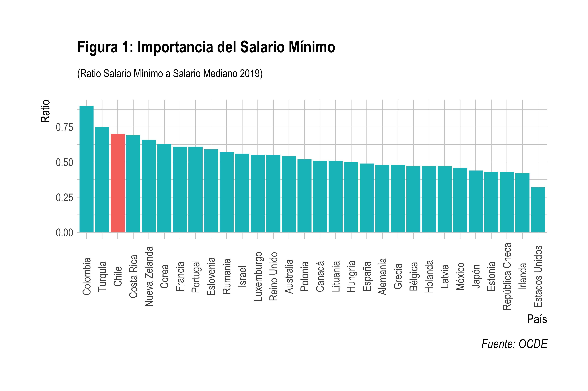

¿Es conveniente subir el salario mínimo en el contexto actual?
Publicado en la Revista Observatorio Económico de la Facultad de Economía y Negocios de la Universidad Alberto Hurtado
De acuerdo a lo pactado en el acuerdo de reajuste del salario firmado entre el gobierno y la Central Única de Trabajadores (CUT) en 2020, el nuevo proceso de negociación para el 2021 se inició formalmente este mes de abril. En esta oportunidad, y como ha sido la tónica en el pasado, la CUT propone que el reajuste incremente el salario mínimo hasta los 500.000 pesos, lo que implicaría un incremento de 53% respecto del salario mínimo actualmente vigente de 326.500 pesos (o aproximadamente 50% si se ajusta por inflación). Los porcentajes de incremento a los que apunta la CUT son bastante importantes. Aún si tomáramos el ingreso mínimo garantizado, esto es adicionando el aporte fiscal de 47.927 pesos, el incremento sería de un no despreciable 33.5%. En cualquier caso, la pregunta que surge es si es conveniente pensar en incrementar de forma importante el salario mínimo, en un contexto en el que el mercado laboral se encuentra en una posición muy débil gracias a los efectos de la pandemia del COVID19 y las medidas implementadas por el gobierno para contenerla.
La fijación y constante reajuste del salario mínimo tiene dos objetivos relacionados con consideraciones de eficiencia y equidad. Por un lado, cuando el mercado laboral es imperfecto, por ejemplo cuando las empresas tienen un considerablemente mayor poder de negociación en relación con los trabajadores, de forma que los trabajadores reciben salarios muy por debajo de su productividad, el salario mínimo permite mejorar el balance en dicho poder de mercado. Por otro lado, al empujar la base de la distribución de salarios, el salario mínimo permite reducir las desigualdades salariales mejorando los ingresos de los trabajadores con ingresos más bajos (típicamente jóvenes y trabajadores de baja calificación). Ajustes importantes en el salario mínimo, como los propuestos por la CUT, tiene principalmente consideraciones de equidad. Es importante señalar que para que el salario mínimo sea efectivo como herramienta de política laboral para cumplir estos dos objetivos, y con ello mejorar el bienestar de los trabajadores, su fijación debe pasar por un proceso de sintonía fina cuidadoso. Un salario fijo muy bajo es inefectivo. Esta es la justificación para reajustarlo en el tiempo, para que de esta manera no quede desactualizado. Por el contrario, si es fijado en valores muy altos, esto es muy por encima de la productividad del trabajo, el salario mínimo incluso podría tener efectos negativos sobre el empleo y el bienestar de los trabajadores que precisamente se busca proteger. En este caso incluso se podría estar exacerbando las fallas de mercado que se buscan corregir; la del poder de mercado por ejemplo.
La evidencia empírica sobre el efecto de incrementos en el salario mínimo sobre el empleo no es conclusiva. Dependiendo del contexto, los resultados varían de efectos negativos importantes sobre el empleo y el desempleo, hasta efectos nulos en la destrucción de empleo acompañados por incrementos moderados en el empleo. Estos resultados no son sorprendentes, sin embargo, debido a que los efectos de esta política dependen crucialmente de las características y la estructura del mercado laboral particular en estudio; por ejemplo, dada la existencia de imperfecciones importantes como las mencionadas antes. Donde sí existe relativo consenso es que los efectos, si éstos existen, son heterogéneos entre trabajadores, siendo los trabajadores jóvenes y los menos calificados los que eventualmente serían más afectados por incrementos sustantivos en el salario mínimo. Asimismo, la evidencia también encuentra que los efectos, de nuevo si éstos existen, son diferentes según el ciclo económico, esto es si la economía está en recesión o en expansión. Cuando la economía está en recesión, o presenta un crecimiento muy débil, una política de incremento importantes en el salario mínimo sería arriesgada.
¿Cuán importante o restrictivo es el salario mínimo en Chile? La figura 1 muestra la comparación del ratio salario mínimo respecto de la mediana de los salarios para los países de la OCDE. Este indicador es un punto de referencia de la importancia que tiene el salario mínimo, ya que mientras más alto este sea, mayor será la proporción de trabajadores susceptibles de ser afectados ante incrementos en el salario mínimo. En Chile el salario mínimo representa el 70% de la mediana de los salarios, lo que nos posiciona como el tercer país, luego de Colombia y Turquía, con mayor importancia del salario mínimo. De acuerdo a los datos de la Encuesta Suplementaria de Ingresos del INE de 2019, la última públicamente disponible, el 16% de los empleados que trabajan tiempo completo ganaban entre 1 y 1.3 salarios mínimos (30% por arriba). Más aún, casi 30% de los trabajadores considerados ganaban entre 1 y 1.5 salarios mínimos (50% por arriba). Este sería aproximadamente el grupo afecto si al final se considera el incremento en el salario mínimo propuesto por la CUT. En términos de su composición, el 25% de quienes ganaban entre 1 y 1.5 salarios mínimos eran jóvenes de menos de 30 años, el 74% de ellos contaba como máximo con educación secundaria, y que el 35% eran trabajadores no calificados. Cuatro sectores (agricultura, comercio, construcción e industria) concentraban el 62% del empleo de este grupo de trabajadores. Finalmente, el 52% de estos trabajadores trabajaba en empresas de menos de 50 empleados, el 77% de ellos tenían contrato indefinido y cerca de 31% tenían una antigüedad menor a 1 año en sus trabajos. En suma, este grupo se trata de trabajadores de bajo nivel educativo y calificación, con trabajos inestables en empresas pequeñas de sectores con actividad económica también inestable, como es el caso de la construcción y la agricultura.
Sin duda que mejorar las condiciones de vida de los trabajadores de bajos ingresos es un objetivo deseable (consideraciones de equidad), no obstante hay dos puntos importantes a considerar en el reajuste de este año. Primero, la empleabilidad de este grupo no debe ser afectada. El contexto actual, con una economía que se contrajo 5% en 2020, hace difícil lo anterior, además que a la mezcla se suma una tasa de desempleo en los dos dígitos y unas vacantes de nuevos trabajos que apenas se recuperan. Más aún, la creación de empleos para este grupo de trabajadores es probablemente más débil que la que se esperaría para los trabajadores de altos ingresos. Segundo, es importante considerar cuánto espacio existe para divergencias del salario mínimo respecto de la productividad laboral. Si no hay espacio, deberíamos esperar que los aumentos de productividad sean al menos iguales a los aumentos esperados en el salario mínimo para hacer sostenible la política. Al respecto de este punto, diversos estudios muestran preocupación por el crecimiento de la productividad en Chile en los últimos años y hacia el futuro. De hecho, como lo muestra la figura 2, el salario mínimo creció de forma proporcional a la productividad sólo hasta el 2003, año a partir del cual la productividad laboral prácticamente se estancó mientras que el salario mínimo creció en promedio 4% real por año. En suma, estos dos aspectos debieran poner una nota de cautela para los actores involucrados en la negociación del reajuste del salario mínimo este año.
